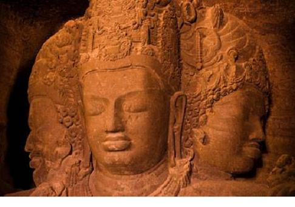

A
Abhidamma: Luận, một trong tam tạng của Phật giáo.
Açoka [Ashoka]: (A Dục) một trong những ông vua đầu tiên theo đạo Phật và làm cho đạo đó phát triển mạnh, ở thế kỉ thứ III trước Công nguyên.
Adrishta: Vô kiến
Advaitam: bất nhị nguyên
Ahimsa: giới luật bất tổn sinh (không được làm thương tổn tới sinh mạng của một loài nào), ta thường dịch là bất bạo động, hoặc bất hại.
Ajur veda: phép trường sinh chỉ trong Arthava Veda.
Akbar: (A Cách Bá) một ông vua gốc Mông Cổ cai trị Ấn, rất có tài, ở thế kỉ XVI.
Amida: Phật A Di Đà.
Ananda: khánh hỉ tức cảnh vĩnh phúc khi đã đại giác, thấy mình với Đại Ngã chỉ là một. Cũng là tên một môn đệ thân tín của Phật Thích Ca, theo truyền thuyết có công đầu chép lại lời dạy của Phật; tiếng Hán là A Nan.
Aranyaka: một phần trong các kinh Veda.
Arhat: La Hán, trong đạo Phật. Trong đạo Jaïn, trỏ một linh hồn đã được giải thoát vĩnh viễn.
Asana: (tư thế) giai đoạn thứ ba để tu yoga: bỏ hết mọi cử động, cảm giác.
Ashrama: giai đoạn tu hành theo Bà La Môn để tới bực thánh.
Astika: hữu (trái với vô).
Atharva Veda: Coi Veda.
Atman: linh hồn của mọi linh hồn, tức cái Đại Ngã. Atman với Brahman chỉ là một.
Avalokiteshvara: một vị thần từ bi trong Ấn Độ giáo[1].
Avidya: vô minh (không sáng suốt, mê muội).
B
Bengali: một ngôn ngữ văn chương ở miền Bengale.
Bhakti-yoga: con đường tu hành bằng từ ái.
Bhagavad Gita: trường thi triết lí danh tiếng nhất của Ấn, người Trung Hoa dịch là Bát Già Phạn khúc.
Bhikkhu: tì khưu.
Bodhi: cây bồ đề.
Bodhisattwa: Phật Bồ Tát, tự nguyện đầu thai để cứu nhân loại.
Brahma: Phạn Thiên, một trong ba vị thần tối cao.
Brahmana: Phạn chí, sách lễ của đạo Bà La Môn.
Brahmane [Brahman]: Bà La Môn, trỏ một tập cấp tu sĩ và đạo của các tu sĩ đó, đạo này có trước Phật giáo, rất phổ biến ở Ấn.
Brahman: Thực thể của vũ trụ, linh hồn của mọi vật (nhiều sách thường dùng lẫn lộn Brahma với Brahman).
Bhrama-chary[2]: giai đoạn tu hành thứ nhất của Bà La Môn khi chưa có vợ.
Bhramacharya: nguyện vọng của người tu hành, bỏ hết nhục dục, giữ cho mình thanh khiết.
Bhrama-somaj: Hội Brahma, một phong trào cải lương ở thế kỉ XIX.
Buddhi: trí năng.
CH
Chaïtya [Chaitya]: phòng hội họp trong các chùa, đền.
Charka: guồng quay sợi.
Charvaka: một phái duy vật ở Ấn.
D
Darshana: tên gọi chung các triết hệ chính thống ở Ấn.
Devadasi: ca vũ nữ mà cũng là con gái điếm trong các đền Ấn.
Devadatta: (Đề Bà Đạt Đa) em bà con của Phật.
Dharana: giai đoạn thứ sáu để tu yoga: thiền.
Dharma: bổn phận thuộc mỗi tập cấp.
Dhyana: giai đoạn thứ bảy để tu yoga: định.
Digambara: một phái trong đạo Jaïn, chủ trương khoả thân.
Dravidien [Dravidian]: thổ dân ở
F
Fakir: từ ngữ này gốc Ả Rập, chính nghĩa là nghèo, mới đầu trỏ một hạng tu sĩ Hồi nguyện sống nghèo, sau trỏ cả những tu sĩ yoga[3].
G
Gandhara: tên một miền mà cũng là một phái điêu khắc chịu ảnh hưởng của Hi Lạp.
Gautama: Cồ Đàm, thị tộc của Phật Thích Ca.
Gopuram: cửa chính trong các đền Ấn.
Grihastha: giai đoạn tu hành thứ nhì của Bà La Môn khi có vợ.
Guna: khả năng biến hoá.
Gupta: tên một miền ở Ấn rất thịnh, rất văn minh trong các thế kỉ thứ IV, V; cũng trỏ nền văn minh đó.
Guru: thầy, phu tử; mỗi trẻ em Ấn theo học một guru từ nhỏ tới khoảng 20 tuổi, phải phục vụ guru cũng như hồi xưa chúng ta phục vụ các thầy đồ.
H
Hinayana: Tiểu thặng, cũng gọi là Tiểu thừa (tiếng Pháp dịch là Petit véhicule).
Hindi: một thổ ngữ quan trọng ở Ấn.
Hindoustani [Hindustani]: một thổ ngữ từ thổ ngữ hindi chuyển qua.
I
Inana-yoga [Jnana-yoga]: con đường tu hành bằng trầm tư.
Ishvara: đấng Sáng tạo, cũng tức là Brahman.
J
Jaïn [Jain]: (Kì Na giáo) một tôn giáo đồng thời với đạo Phật.
Jaimini: người thành lập triết thuyết Purvamimansa.
Jina: đấng Cứu thế, theo đạo Jaïn.
K
Kali: nữ thần, thường được coi là thần Chết, hình rất rùng rợn, vợ của thần Shiva.
Kalpa: kiếp, một chu kì bằng 4.320 triệu năm.
Kanada: thuỷ tổ phái Vaisheshika.
Kapila: người lập ra triết thuyết Sankhya.
Kapilavastu: Ca Tì La Vệ, kinh đô vương quốc của thân phụ Phật Thích Ca.
Karma: nghiệp báo[4].
Karma-yoga: con đường tu bằng hành động.
Khaddar: một thứ hàng “len” xấu, hoặc một thứ vải thô người Ấn dệt lấy.
Kharosthi: cổ tự Ấn ở thế kỉ thứ V trước Công nguyên.
Kshatriya: tập cấp chiến sĩ.
L
Linga: hình tượng trưng dương vật, để thờ.
M
Mahabharata: một anh hùng trường ca thời cổ, rất danh tiếng.
Mahatma: thánh.
Mahavira: đại anh hùng, tên tín đồ Jaïn tặng người sáng lập ra đạo Jaïn.
Mahayana: Đại thặng, cũng gọi là Đại thừa (tiếng Pháp dịch là Grand véhicule).
Mahayuga: một thời vận bằng 4.320.000 năm, một phần ngàn của một kalpa.
Manas: mạt-na, tức tinh thần.
Mandapam: cổng trong các đền Ấn.
Manou [Manu]: bộ luật cổ về các tập cấp; theo truyền thuyết, Manou là người soạn bộ luật đó.
Mantra: thánh ca, có chỗ trỏ thần chú, bùa phép.
Mastaba: bệ lớn trên đó dựng đền, như bệ Voi ở Đế Thiên Đế Thích.
Maya: Ma Da, tên thân mẫu Phật Thích Ca.
Moksha: sự thoát khỏi vòng luân hồi.
Mullah: tu sĩ Hồi giáo.
N
Nalanda: tu viện Na Lan Đà.
Naga: thổ dân Ấn trước khi người Aryen tới; cũng trỏ rồng thần hoặc rắn thần mà thổ dân đó thờ.
Nastika: vô (trái với hữu).
Niyama: (luật) giai đoạn thứ nhì để tu yoga: giai đoạn dự bị.
Nirvana: Niết bàn.
Nyaya: luận lí học, tên một triết thuyết trọng sự biện luận (chính nghĩa là nghị luận).
O
Om: một âm thiêng liêng của Ấn, người tu yoga khi toạ thiền, tụng hoài âm đó.
P
Pali: cổ ngữ Ấn ở phương Nam, có sau cổ ngữ sanscrit; các sách Việt thường dịch sanscrit và pali là tiếng phạn, có lẽ nên phân biệt sanscrit là bắc phạn, và pali là nam phạn.
Panchagavia: một phép “tẩy uế” rất đáng kinh, phải uống nước tiểu của bò cái, vân vân.
Paria [Pariah]: tiện dân.
Pitaka: tạng.
Prakiti [Prakriti]: bản thể (cái sinh ra những cái khác).
Prakrit: cổ ngữ Ấn, có sau cổ ngữ sanscrit, trước cổ ngữ pali.
Pranayama: (điều khí) giai đoạn thứ tư để tu yoga: kiểm soát hơi thở.
Pratyahara: (li thế) giai đoạn thứ năm để tu yoga: diệt hết ý nghĩ.
Purana: sách giáo lí cho các tập cấp không phải là Bà La Môn; cũng có nghĩa là truyện cổ Ấn Độ.
Purdah: tục đàn bà cấm cung và che mặt.
Purusha: thần ngã hoặc tinh thần.
Pura mimansa: một triết thuyết phản đối chủ trương vô tín ngưỡng.
R
Radjpute [Rajput]: dân miền Rajputana ở Tây Ấn[5].
Raga: nhạc chỉ.
Rahula: tên con trai của Phật Thích Ca.
Raja: người thủ lãnh một bộ lạc thời cổ.
Rajah: tiểu vương Ấn.
Rama: một hoá thân của thần Vichnou.
Ramayana: một anh hùng trường ca rất nổi danh thời cổ Ấn Độ.
Rig Veda: coi Veda.
Rita: đạo Trời.
S
Sama Veda: coi Veda.
Samadhi: (tuệ) giai đoạn thứ tám và cuối cùng để tu yoga: xuất thần.
Samana: sa môn.
Sankhya: số luận, môn phái triết có trước khi Thích Ca ra đời (chính nghĩa là liệt kê).
Sannyasi: giai đoạn tu cuối cùng của Bà La Môn: từ bỏ xã hội và gia đình.
Sanscrit: cổ ngữ Ấn Độ ở phương Bắc.
Sarnath: Lộc Uyển, nơi Phật Thích Ca thuyết pháp lần đầu.
Shah: tiếng Ba Tư trỏ vua.
Shakti: năng lực sinh hoá, sáng tạo; cũng trỏ giáo phái thờ năng lực đó.
Shakya Muni: Thích Ca Mâu Ni (có sách viết là Çakya Mouni).
Shaman: phù thuỷ.
Sangha: tăng già, đoàn thể tu sĩ trong Phật giáo.
Shankara: một triết gia, có công lớn với triết thuyết Vedanta, thuộc phái Bà La Môn; người ta coi ông là Kant của Ấn Độ.
Shiva: một trong ba vị thần tối cao.
Shivaisme [Shivaism]: giáo phái tôn thờ Shiva.
Shuddhodhana: Tịnh Phạn, thân phụ của Phật Thích Ca.
Shudra: tập cấp công nhân, lao động.
Siddharta [Siddhartha] Tất Đạt Ta, tên tục của Thích Ca.
Sikh: tên một giáo phái, cũng trỏ những người theo giáo phái đó.
Stupa: cái tháp.
Sutra: lời bình giải các kinh, có hình thức cách ngôn, người ta thường dịch là kinh.
Sutta: kinh, một trong tam tạng của Phật giáo.
Swadeshi: phong trào tẩy chay hàng Anh.
Swaraj: phong trào tự trị.

Tượng Trimurti
T
Tamul [Tamil]: thổ ngữ văn chương của miền
Tantra: cổ thư, chân ngôn.
Tathagata: Như Lai, tôn danh của Phật Thích Ca, có nghĩa là vị nắm được chân lí.
Tattwa: thực thể, tát đoả.
Topa: cũng như stupa, mới đầu trỏ một nấm mồ, sau trỏ cái tháp chứa hài cốt các vị thánh hay hoà thượng.
Trimurti: tượng thần Shiva có ba mặt[7].
Tripitaka: tam tạng gồm Kinh, Luật, Luận của Phật giáo.
U
Upanishad: phần thuyết pháp trong các kinh Veda.
V
Vaisheshika: thắng luận, tên một triết thuyết.
Vaishnavisme [Vaishnavism]: giáo phái tôn thờ thần Vichnou.
Vaisya: tập cấp thương nhân.
Vanaprastha: giai đoạn tu hành thứ ba của Bà La Môn: ở ẩn trong núi, nhưng vẫn sống với vợ.
Veda: Vệ Đà hoặc Phệ Đà: các kinh có từ khoảng 1000 tới 500 trước Công nguyên. Nay còn 4 kinh: Rig Veda (Lê Câu Vệ Đà), Sama Veda, Yajur Vệ Đà (Dạ Nhu Vệ Đà), Arthava Veda. Cũng trỏ thời đại các kinh đó xuất hiện.
Vichnou [Vishnu]: một trong ba vị thần tối cao.
Vihara: tu viện.
Vinaya: Luật, một trong tam tạng của Phật giáo.
Vishesha: đặc chất, đặc tính, thắng (phân biệt).
Y
Yajur Veda: coi Veda.
Yama: giai đoạn đầu tiên để tu yoga: diệt dục.
Yoga: Du già, một lối tu khổ hạnh (chính nghĩa là cái ách).
Yogi: người tu theo yoga.
Yoni: hình tượng trưng âm hộ, để thờ.
Yuga: một thời đại bằng một phần tư mahayuga.
[1] Cũng là Quán Thế Âm Bồ Tát trong Phật giáo. (Goldfish).
[2] Chắc là Bhramachari bị in sai mà thành Bhrama-chary, vì trong tiết V – chương V in là Bhramachari, còn bản tiếng Anh cũng phiên âm là: Bhramachari. (Goldfish).
[3] Trong Tiết VI – Chương V, có đoạn: “một triệu fakir (cũng như phù thuỷ)” - Bản tiếng Anh chỉ viết là: “a million fakirs”. (Goldfish).
[4] Có chỗ cụ Nguyễn Hiến Lê dịch là: nghiệp, quả báo. (Goldfish).
[5] Radjpute có chỗ chép là Rajput hoặc Rajpute; Rajputana có chỗ chép là Radjputana. (Goldfish).
[6] Trong sách có chỗ giảng Tamil là xứ của người Tamil. (Goldfish).
[7] Trong tiết II – Chương V, tác giả viết: Người Ấn cho rằng đời sống cũng như vũ trụ, qua ba giai đoạn liên tiếp: sinh, trưởng rồi diệt. Vì vậy có ba thứ thần: thần Brahma, đức Sáng tạo; thần Vichnou, đức Bảo tồn; và thần Shiva, đức Huỷ diệt: đó là Trimurti, tức “ba hình thức” mà tất cả các người Ấn, trừ những tín đồ Jaïn [và Hồi giáo, dĩ nhiên] đều theo”. (Goldfish).